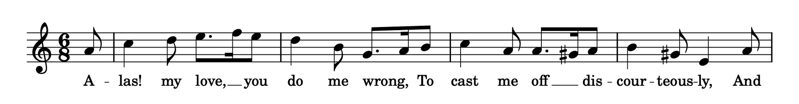
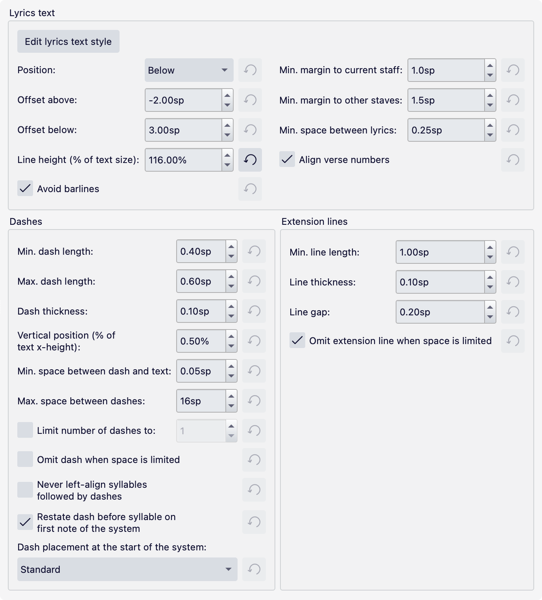

Lyrics
Overview
Lyrics are the sung text associated with melodic lines on staves.

Lyrics are entered syllable by syllable, with dashes connecting syllables with a word. An underscore line (or extension line) is shown at the end of word where the syllable is sung over multiple notes (either across a sequence of tied notes, or across multiple pitches, where it is called a melisma).
Inputting lyrics
To start adding lyrics to notes:
- Select the desired start note
- Press Ctrl+L (Mac & Linux: Cmd+L) or choose the menu option Add -> Text -> Lyrics, which will create a bounding box ready for text input
- Type the syllable for the note.
The next step depends on the text.
- To type another syllable belonging to the same word:
- Press - (hyphen). This advances to the next note. If the prior syllable is to be sung over multiple notes, press - repeatedly until you reach the note for the next syllable. Then, type the next syllable.
- To type a syllable that starts a new word:
- If the prior syllable only spans the one note, just press Space to advance to the next note. Then, type the next syllable.
- If the prior syllable is to be sung over multiple notes, type _ (underscore) repeatedly until you reach the note for the next syllable.
The _ key draws an underscore line to show a melisma at the end of a word. A line will start being drawn the first time you type the key, but since by definition a melisma line must span multiple notes, if you then start to type a syllable on the next note, the line will disappear.
While inputting or editing lyrics, pressing the Left or Right cursor keys will move through the text one character at a time in the usual way. When you reach the end of a syllable, it will jump to the next one.
Pressing Space at any time—even if the cursor is in the middle of a syllable—will advance to the next note. Shift+Space will jump back one syllable.
To enter very long dashed or underscore lines, there is a shortcut to avoid typing - or _ over and over again:
- Type the first syllable
- Select the last note of the melisma (i.e. the note before the next syllable)
- Type - or _ once, as required. The dashed line or underscore line will be drawn from the first syllable up to the selected note, and the cursor will advance to the next note so you can start typing the next syllable.
Entering lyrics onto rests
When inputting lyrics, the cursor will skip over rests. However, if you need to enter a lyric onto a rest this can be done by explicitly selecting the rest, pressing Ctrl+L, and then typing the syllable.
Entering reserved characters
For the most part, lyrics can be input and edited like any other text. However, as noted above, certain keys like - and _ and Space have a special function during lyrics entry. If you want to enter any of these characters within a syllable, you must use the following key combinations:
| Character | Windows/Linux | macOS |
|---|---|---|
| Space ( ) | Ctrl+Space | Opt+Space |
| Hyphen (-) | Ctrl+- | Opt+- |
| Underscore (_) | Ctrl+Shift+_ | Opt+Shift+_ |
| Line break (↵) | Ctrl+Return (or Enter on the numeric keypad) | Opt+Return (or Enter on the numeric keypad) |
Entering elision slurs
An elision slur (lyric slur or synalepha) is a symbol used to connect two syllables together under one note. To input the lyrics in this example:

- Type
che - Open the Special characters dialog
- Click one of the elision slurs in the Common symbols tab (there are three different widths available)
- Type
am - Press - (hyphen) to move to the next note, then continue entering the lyrics in the usual way.
Multiple verses
Lyrics can be organized into verses, with verse 1 at the top and subsequent verses in order below:

A score with four verses
Entering multiple verses
To enter subsequent verses, simply repeat the steps described above in Inputting lyrics. Lyrics entry automatically starts in the space beneath the last entered verse.
While inputting or editing lyrics you can move between verses using the Up and Down cursor keys. Pressing the Return or Enter key will also move down to the next verse.
Moving lyrics between verses
All lyrics are assigned a verse number, with the top line being verse 1, the next line down verse 2, and so on. You can change the verse number of lyrics by selecting them and adjusting the value of Properties -> Lyrics -> Set to verse. This will also change the vertical order accordingly.
Showing verse numbers on the score
You can add numbers to the start of verses by typing them explicitly before the first syllable. To create a space between the number and the syllable, type Ctrl+Space (Mac: Opt+Space).
To align the numbers across multiple verses, check Format -> Style -> Lyrics -> Lyrics text -> Align verse numbers.
Editing existing lyrics
To make additions or changes to existing lyrics, double-click on a syllable or use any other text edit mode shortcut.
Deleting lyrics
You can delete lyrics by selecting the syllable(s) and pressing Del or Backspace. Lyrics are also automatically deleted if their parent notes are deleted.
Copying lyrics
If you copy a range selection of notes, any lyrics attached to them will be automatically copied.
You can copy lyrics themselves from one range of notes to another using the usual copy and paste methods, i.e.:
- Select a range or list of lyrics elements
- Press Ctrl+C (Mac: Cmd+C)
- Select a destination note
- Press Ctrl+V to paste the lyrics starting from the selected note.
Note that the lyrics will be pasted to the same verse as in the source. The destination range should be clear of existing lyrics, otherwise the copied lyrics will be pasted on top of them.
You can copy all the lyrics in a score to the clipboard by using the menu option Tools -> Copy lyrics to clipboard. This can be useful if you want to paste them into any other software.
Pasting lyrics from an external file
If you type a sequence of lyrics in a text editor (e.g. Notepad on Windows), including hyphens and spaces as required, you can then paste this into MuseScore Studio:
- Select the text in the editor and copy it to the clipboard
- In MuseScore, select the starting note and press Ctrl+L (you can also press Return/Enter to move to a specific verse, if necessary)
- Press Ctrl+V repeatedly to paste in the lyrics, one syllable at a time.
Placing lyrics above the staff
All lyrics are placed below the staff by default. To move lyrics above the staff (for example, when working with multiple voices):
- Select the lyrics
- Go to the Properties panel
- Under Text, set Position to Above.
If you want all the lyrics on the score to go above the staves, set Format -> Style -> Lyrics -> Lyrics text -> Position to Above.
Lyrics style
Format -> Style -> Lyrics controls many settings to specify the layout and appearance of lyrics, some of which are very nuanced.

Lyrics text
The Edit lyrics text style button takes you to the page inside Text styles where the styles for lyrics can be configured. There are two styles, which have identical definitions by default. Lyrics odd lines is applied to all odd-numbered verses (1, 3, 5, etc) and Lyrics even lines is applied to all even-numbered verses (2, 4, 6, etc). This enables you to, for example, have lyrics in verse 1 and then a translation of those lyrics in verse 2 with a different style, for example in italics.
The other settings are as follows:
- Position: Whether lyrics should be above or below the staff
- Offset above/Offset below: Default vertical position of lyrics when above or below
- Line height: Distance between successive lines (verses), as a percentage of the font's body height
- Avoid barlines: If checked on, extra space will be made either side of lyrics, if necessary, to avoid collisions with barlines. Uncheck this option if you prefer lyrics to overlap the barlines, in which case it is a good idea to ensure that Format -> Style -> Barlines -> Mask barlines when intersecting text is checked on.
- Min. margin to current staff: Minimum distance between the lyrics and the staff to which they are attached
- Min. margin to other staves: Minimum distance between the lyrics and the nearest staff outside
- Min. space between lyrics: Minimum padding distance between adjacent lyric syllables. If Avoid barlines is turned on, this also controls the padding between lyrics and barlines.
- Align verse numbers: Aligns manually-entered verse numbers. See Showing verse numbers on the score, above.
Dashes
- Min. dash length/Max. dash length: Minimum and maximum length of a dash. The maximum length will be used by default when there is enough space, but this will be shortened down to the minimum in tight situations.
- Dash thickness: Thickness of the dash
- Vertical position: Vertical position of the dashes as a percentage of the font's height, measured up from the baseline
- Min. space between dash and text: Padding between a dash and a lyric either side
- Max. space between dashes: Maximum distance between consecutive dashes. Where this distance is exceeded, additional dashes are added to the line.
- Limit number of dashes to: A cap on the number of dashes in a line
- Omit dash when space is limited: If checked on, no dash will be drawn if there is insufficient space (taking into account minimum dash length and padding)
- Never left-align syllables followed by dashes: Syllables are centered on the note by default, but become left-aligned when they extend over multiple notes. If checked, lyrics followed by dashes will never become left-aligned, even if they span multiple notes.
- Restate dash before syllable on the first note of the system: When the syllables of a word are split over a system break and the syllable on the new system is on the first note, this option specifies whether a dash should be drawn before the syllable
- Dash placement at the start of the system: When the syllables of a word are split over a system break and the syllable on the new system is not on the first note, this option specifies where exactly the first dash of the line should appear. There are three options:
- Standard: The dashed line is centered between the system header and the next syllable
- Inside the header: The first dash appears before the note (at the same position where a partial tie or slur would begin)
- Under the first note: The first dash appears exactly under the first note on the system
Extension lines
These are also referred to as melismas in the handbook.
- Min. line length: Minimum length of an extension line
- Line thickness: Thickness of the line
- Line gap: Distance between the syllable and the line
- Omit extension line when space is limited: Whether a line can be left out if there is insufficient space (taking into account the minimum length and necessary padding).